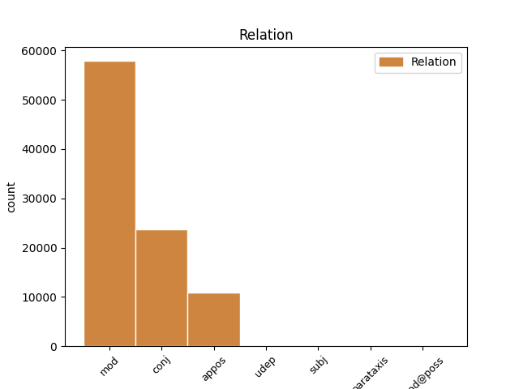
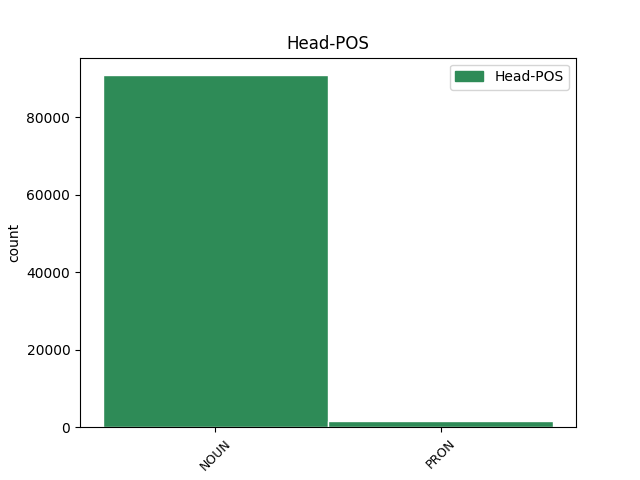
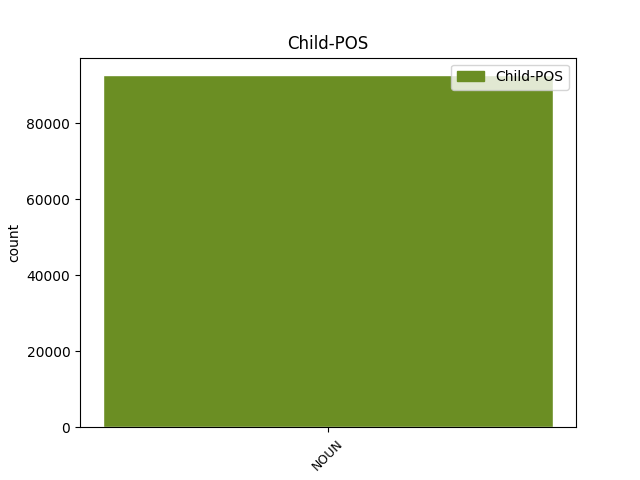

Distribution of features within this leaf



Agreement Rules sorted by frequency.
- When the dependent token is the modifer(mod) of the head token, and the head token is NOUN and the dependent token is NOUN.
1 Analysten _ _ _ _ 0 _ _ _
2 warnen _ _ _ _ 0 _ _ _
3 dagegen _ _ _ _ 0 _ _ _
4 , _ _ _ _ 0 _ _ _
5 dass _ _ _ _ 0 _ _ _
6 der _ _ _ _ 0 _ _ _
7 Umsatz Umsatz NOUN NN Gender=Masc|Number=Sing|Person=3 0 _ _ _
8 der _ _ _ _ 0 _ _ _
9 Firma Firma NOUN NN Gender=Fem|Number=Sing|Person=3 7 mod _ _
10 durch _ _ _ _ 0 _ _ _
11 die _ _ _ _ 0 _ _ _
12 Auftragsstornierungen _ _ _ _ 0 _ _ _
13 um _ _ _ _ 0 _ _ _
14 etwa _ _ _ _ 0 _ _ _
15 19 _ _ _ _ 0 _ _ _
16 Prozent _ _ _ _ 0 _ _ _
17 sinken _ _ _ _ 0 _ _ _
18 werde _ _ _ _ 0 _ _ _
19 . _ _ _ _ 0 _ _ _
1 Die _ _ _ _ 0 _ _ _
2 ersten _ _ _ _ 0 _ _ _
3 externen _ _ _ _ 0 _ _ _
4 Laufwerke _ _ _ _ 0 _ _ _
5 kommen _ _ _ _ 0 _ _ _
6 beispielsweise _ _ _ _ 0 _ _ _
7 von _ _ _ _ 0 _ _ _
8 der _ _ _ _ 0 _ _ _
9 Firma _ _ _ _ 0 _ _ _
10 QPS _ _ _ _ 0 _ _ _
11 Inc. _ _ _ _ 0 _ _ _
12 Die _ _ _ _ 0 _ _ _
13 Geräte _ _ _ _ 0 _ _ _
14 der _ _ _ _ 0 _ _ _
15 QPS-Que!-Reihe _ _ _ _ 0 _ _ _
16 sind _ _ _ _ 0 _ _ _
17 mit _ _ _ _ 0 _ _ _
18 CD-RW-Brenner _ _ _ _ 0 _ _ _
19 , _ _ _ _ 0 _ _ _
20 DVD-RAM-Laufwerk _ _ _ _ 0 _ _ _
21 oder _ _ _ _ 0 _ _ _
22 als _ _ _ _ 0 _ _ _
23 sogenanntes _ _ _ _ 0 _ _ _
24 M3 _ _ _ _ 0 _ _ _
25 Dual _ _ _ _ 0 _ _ _
26 Drive _ _ _ _ 0 _ _ _
27 , _ _ _ _ 0 _ _ _
28 das _ _ _ _ 0 _ _ _
29 Festplatte Festplatte NOUN NN Gender=Fem|Number=Sing|Person=3 0 _ _ _
30 und _ _ _ _ 0 _ _ _
31 CD-ROM-Laufwerk Laufwerk NOUN NN Gender=Neut|Number=Sing|Person=3 29 conj _ _
32 in _ _ _ _ 0 _ _ _
33 einem _ _ _ _ 0 _ _ _
34 Gerät _ _ _ _ 0 _ _ _
35 integriert _ _ _ _ 0 _ _ _
36 , _ _ _ _ 0 _ _ _
37 erhältlich _ _ _ _ 0 _ _ _
38 . _ _ _ _ 0 _ _ _
1 Ein _ _ _ _ 0 _ _ _
2 Experiment _ _ _ _ 0 _ _ _
3 hat _ _ _ _ 0 _ _ _
4 gezeigt _ _ _ _ 0 _ _ _
5 , _ _ _ _ 0 _ _ _
6 dass _ _ _ _ 0 _ _ _
7 der _ _ _ _ 0 _ _ _
8 Pilz _ _ _ _ 0 _ _ _
9 erst _ _ _ _ 0 _ _ _
10 ab _ _ _ _ 0 _ _ _
11 30 _ _ _ _ 0 _ _ _
12 Grad Grad NOUN NN Gender=Masc|Number=Plur|Person=3 0 _ _ _
13 Celsius Celsius NOUN NN Gender=Neut|Number=Plur|Person=3 12 appos _ _
14 und _ _ _ _ 0 _ _ _
15 einer _ _ _ _ 0 _ _ _
16 relativen _ _ _ _ 0 _ _ _
17 Luftfeuchtigkeit _ _ _ _ 0 _ _ _
18 von _ _ _ _ 0 _ _ _
19 90 _ _ _ _ 0 _ _ _
20 Prozent _ _ _ _ 0 _ _ _
21 Appetit _ _ _ _ 0 _ _ _
22 auf _ _ _ _ 0 _ _ _
23 CDs _ _ _ _ 0 _ _ _
24 bekommt _ _ _ _ 0 _ _ _
25 . _ _ _ _ 0 _ _ _
1 Die _ _ _ _ 0 _ _ _
2 Firma _ _ _ _ 0 _ _ _
3 unterstütze _ _ _ _ 0 _ _ _
4 damit _ _ _ _ 0 _ _ _
5 nicht _ _ _ _ 0 _ _ _
6 nur _ _ _ _ 0 _ _ _
7 die _ _ _ _ 0 _ _ _
8 Weiterbildung _ _ _ _ 0 _ _ _
9 der _ _ _ _ 0 _ _ _
10 eigenen _ _ _ _ 0 _ _ _
11 Angestellten _ _ _ _ 0 _ _ _
12 , _ _ _ _ 0 _ _ _
13 sondern _ _ _ _ 0 _ _ _
14 auch _ _ _ _ 0 _ _ _
15 die die PRON PDS Case=Acc|Gender=Fem|Number=Sing|Person=3|PronType=Dem 0 _ _ _
16 der _ _ _ _ 0 _ _ _
17 gesamten _ _ _ _ 0 _ _ _
18 Familie Familie NOUN NN Gender=Fem|Number=Sing|Person=3 15 mod _ _
19 , _ _ _ _ 0 _ _ _
20 was _ _ _ _ 0 _ _ _
21 nicht _ _ _ _ 0 _ _ _
22 zuletzt _ _ _ _ 0 _ _ _
23 dem _ _ _ _ 0 _ _ _
24 Staate _ _ _ _ 0 _ _ _
25 zu _ _ _ _ 0 _ _ _
26 Gute _ _ _ _ 0 _ _ _
27 käme _ _ _ _ 0 _ _ _
28 . _ _ _ _ 0 _ _ _
1 " _ _ _ _ 0 _ _ _
2 Drin _ _ _ _ 0 _ _ _
3 sein _ _ _ _ 0 _ _ _
4 " _ _ _ _ 0 _ _ _
5 wollen _ _ _ _ 0 _ _ _
6 mittlerweile _ _ _ _ 0 _ _ _
7 alle all PRON PIS Case=Nom|Number=Plur|Person=3|PronType=Ind,Neg,Tot 0 _ _ _
8 , _ _ _ _ 0 _ _ _
9 auch _ _ _ _ 0 _ _ _
10 Menschen Mensch NOUN NN Gender=Masc|Number=Plur|Person=3 7 appos _ _
11 die _ _ _ _ 0 _ _ _
12 jenseits _ _ _ _ 0 _ _ _
13 der _ _ _ _ 0 _ _ _
14 50 _ _ _ _ 0 _ _ _
15 und _ _ _ _ 0 _ _ _
16 nicht _ _ _ _ 0 _ _ _
17 mit _ _ _ _ 0 _ _ _
18 dem _ _ _ _ 0 _ _ _
19 Computer _ _ _ _ 0 _ _ _
20 aufgewachsen _ _ _ _ 0 _ _ _
21 sind _ _ _ _ 0 _ _ _
22 . _ _ _ _ 0 _ _ _
1 Die _ _ _ _ 0 _ _ _
2 Bildung _ _ _ _ 0 _ _ _
3 eines ein PRON PIS Case=Gen|Gender=Masc|Number=Sing|Person=3|PronType=Ind,Neg,Tot 0 _ _ _
4 der _ _ _ _ 0 _ _ _
5 zehn _ _ _ _ 0 _ _ _
6 größten _ _ _ _ 0 _ _ _
7 IT-Dienstleister _ _ _ _ 0 _ _ _
8 und _ _ _ _ 0 _ _ _
9 des _ _ _ _ 0 _ _ _
10 fünftgrößten _ _ _ _ 0 _ _ _
11 SAP-Beratungszentrums Zentrum NOUN NN Case=Gen|Gender=Neut|Number=Sing|Person=3 3 conj _ _
12 in _ _ _ _ 0 _ _ _
13 Deutschland _ _ _ _ 0 _ _ _
14 haben _ _ _ _ 0 _ _ _
15 sich _ _ _ _ 0 _ _ _
16 SAP _ _ _ _ 0 _ _ _
17 , _ _ _ _ 0 _ _ _
18 Siemens _ _ _ _ 0 _ _ _
19 und _ _ _ _ 0 _ _ _
20 die _ _ _ _ 0 _ _ _
21 Software _ _ _ _ 0 _ _ _
22 AG _ _ _ _ 0 _ _ _
23 auf _ _ _ _ 0 _ _ _
24 die _ _ _ _ 0 _ _ _
25 Fahnen _ _ _ _ 0 _ _ _
26 geschrieben _ _ _ _ 0 _ _ _
27 . _ _ _ _ 0 _ _ _
1 Demnach _ _ _ _ 0 _ _ _
2 verzeichneten _ _ _ _ 0 _ _ _
3 die _ _ _ _ 0 _ _ _
4 Internet-Händler _ _ _ _ 0 _ _ _
5 in _ _ _ _ 0 _ _ _
6 Deutschland _ _ _ _ 0 _ _ _
7 im _ _ _ _ 0 _ _ _
8 vergangenen _ _ _ _ 0 _ _ _
9 Dezember _ _ _ _ 0 _ _ _
10 500.000 _ _ _ _ 0 _ _ _
11 Besucher Besucher NOUN NN Gender=Masc|Number=Plur|Person=3 12 udep _ _
12 mehr mehr PRON PIS Degree=Cmp|Gender=Neut|Number=Plur|Person=3|PronType=Ind,Neg,Tot 0 _ _ _
13 als _ _ _ _ 0 _ _ _
14 im _ _ _ _ 0 _ _ _
15 Monat _ _ _ _ 0 _ _ _
16 zuvor _ _ _ _ 0 _ _ _
17 . _ _ _ _ 0 _ _ _
1 Unterdessen _ _ _ _ 0 _ _ _
2 holen _ _ _ _ 0 _ _ _
3 im _ _ _ _ 0 _ _ _
4 Netz _ _ _ _ 0 _ _ _
5 nicht _ _ _ _ 0 _ _ _
6 nur _ _ _ _ 0 _ _ _
7 die _ _ _ _ 0 _ _ _
8 Frauen _ _ _ _ 0 _ _ _
9 die _ _ _ _ 0 _ _ _
10 Männer _ _ _ _ 0 _ _ _
11 ein _ _ _ _ 0 _ _ _
12 , _ _ _ _ 0 _ _ _
13 sondern _ _ _ _ 0 _ _ _
14 auch _ _ _ _ 0 _ _ _
15 die _ _ _ _ 0 _ _ _
16 Deutschen Deutsch NOUN NN Degree=Pos|Number=Plur|Person=3 18 subj _ _
17 die _ _ _ _ 0 _ _ _
18 Amerikaner Amerikaner NOUN NN Gender=Masc|Number=Plur|Person=3 0 _ _ _
19 . _ _ _ _ 0 _ _ _
1 Die _ _ _ _ 0 _ _ _
2 Kinder _ _ _ _ 0 _ _ _
3 nutzen _ _ _ _ 0 _ _ _
4 E-Mail _ _ _ _ 0 _ _ _
5 ( _ _ _ _ 0 _ _ _
6 73 _ _ _ _ 0 _ _ _
7 Prozent _ _ _ _ 0 _ _ _
8 ) _ _ _ _ 0 _ _ _
9 , _ _ _ _ 0 _ _ _
10 recherchieren _ _ _ _ 0 _ _ _
11 für _ _ _ _ 0 _ _ _
12 Schul-Aufgaben _ _ _ _ 0 _ _ _
13 ( _ _ _ _ 0 _ _ _
14 68 _ _ _ _ 0 _ _ _
15 Prozent _ _ _ _ 0 _ _ _
16 ) _ _ _ _ 0 _ _ _
17 , _ _ _ _ 0 _ _ _
18 suchen _ _ _ _ 0 _ _ _
19 allgemeine _ _ _ _ 0 _ _ _
20 Informationen Information NOUN NN Gender=Fem|Number=Plur|Person=3 0 _ _ _
21 ( _ _ _ _ 0 _ _ _
22 33 _ _ _ _ 0 _ _ _
23 Prozent Prozent NOUN NN Gender=Neut|Number=Plur|Person=3 20 parataxis _ _
24 ) _ _ _ _ 0 _ _ _
25 und _ _ _ _ 0 _ _ _
26 lesen _ _ _ _ 0 _ _ _
27 Nachrichten _ _ _ _ 0 _ _ _
28 ( _ _ _ _ 0 _ _ _
29 20 _ _ _ _ 0 _ _ _
30 Prozent _ _ _ _ 0 _ _ _
31 ) _ _ _ _ 0 _ _ _
32 . _ _ _ _ 0 _ _ _
1 " _ _ _ _ 0 _ _ _
2 Die _ _ _ _ 0 _ _ _
3 amerikanischen _ _ _ _ 0 _ _ _
4 Geheimdienste _ _ _ _ 0 _ _ _
5 handeln _ _ _ _ 0 _ _ _
6 nicht _ _ _ _ 0 _ _ _
7 im _ _ _ _ 0 _ _ _
8 Auftrag _ _ _ _ 0 _ _ _
9 von _ _ _ _ 0 _ _ _
10 US-Unternehmen _ _ _ _ 0 _ _ _
11 , _ _ _ _ 0 _ _ _
12 sondern _ _ _ _ 0 _ _ _
13 in _ _ _ _ 0 _ _ _
14 dem dem PRON PDS Case=Dat|Gender=Neut|Number=Sing|Person=3|PronType=Dem 0 _ _ _
15 der _ _ _ _ 0 _ _ _
16 Regierung Regierung NOUN NN Gender=Fem|Number=Sing|Person=3 14 mod@poss _ _
17 . _ _ _ _ 0 _ _ _
1 Der _ _ _ _ 0 _ _ _
2 verwendet _ _ _ _ 0 _ _ _
3 als _ _ _ _ 0 _ _ _
4 Bildgeber _ _ _ _ 0 _ _ _
5 über _ _ _ _ 0 _ _ _
6 400000 _ _ _ _ 0 _ _ _
7 Spiegelchen _ _ _ _ 0 _ _ _
8 aus _ _ _ _ 0 _ _ _
9 hochreflektiver _ _ _ _ 0 _ _ _
10 Aluminiumfolie _ _ _ _ 0 _ _ _
11 , _ _ _ _ 0 _ _ _
12 so _ _ _ _ 0 _ _ _
13 breit _ _ _ _ 0 _ _ _
14 wie _ _ _ _ 0 _ _ _
15 ein _ _ _ _ 0 _ _ _
16 Fünftel Fünftel NOUN NN Gender=Neut|Number=Sing|Person=3 0 _ _ _
17 eines _ _ _ _ 0 _ _ _
18 menschliches _ _ _ _ 0 _ _ _
19 Haars Haar NOUN NN Case=Gen|Gender=Neut|Number=Sing|Person=3 16 mod@poss _ _
20 . _ _ _ _ 0 _ _ _
Disagree Examples:
1 Hinter _ _ _ _ 0 _ _ _
2 der _ _ _ _ 0 _ _ _
3 neuen _ _ _ _ 0 _ _ _
4 Firma _ _ _ _ 0 _ _ _
5 steht _ _ _ _ 0 _ _ _
6 unter _ _ _ _ 0 _ _ _
7 anderem _ _ _ _ 0 _ _ _
8 Lucent _ _ _ _ 0 _ _ _
9 Technologies _ _ _ _ 0 _ _ _
10 , _ _ _ _ 0 _ _ _
11 einer ein PRON PIS Case=Nom|Gender=Masc|Number=Sing|Person=3|PronType=Ind,Neg,Tot 0 _ _ _
12 der _ _ _ _ 0 _ _ _
13 größten _ _ _ _ 0 _ _ _
14 Anbieter Anbieter NOUN NN Gender=Masc|Number=Plur|Person=3 11 mod _ _
15 von _ _ _ _ 0 _ _ _
16 Equipment _ _ _ _ 0 _ _ _
17 für _ _ _ _ 0 _ _ _
18 Netzwerke _ _ _ _ 0 _ _ _
19 und _ _ _ _ 0 _ _ _
20 Telekommunikation _ _ _ _ 0 _ _ _
21 . _ _ _ _ 0 _ _ _
1 Hinter _ _ _ _ 0 _ _ _
2 der _ _ _ _ 0 _ _ _
3 neuen _ _ _ _ 0 _ _ _
4 Firma _ _ _ _ 0 _ _ _
5 steht _ _ _ _ 0 _ _ _
6 unter _ _ _ _ 0 _ _ _
7 anderem _ _ _ _ 0 _ _ _
8 Lucent _ _ _ _ 0 _ _ _
9 Technologies _ _ _ _ 0 _ _ _
10 , _ _ _ _ 0 _ _ _
11 einer _ _ _ _ 0 _ _ _
12 der _ _ _ _ 0 _ _ _
13 größten _ _ _ _ 0 _ _ _
14 Anbieter _ _ _ _ 0 _ _ _
15 von _ _ _ _ 0 _ _ _
16 Equipment _ _ _ _ 0 _ _ _
17 für _ _ _ _ 0 _ _ _
18 Netzwerke Netzwerk NOUN NN Gender=Neut|Number=Plur|Person=3 0 _ _ _
19 und _ _ _ _ 0 _ _ _
20 Telekommunikation Telekommunikation NOUN NN Gender=Fem|Number=Sing|Person=3 18 conj _ _
21 . _ _ _ _ 0 _ _ _
1 Im _ _ _ _ 0 _ _ _
2 Auftrag _ _ _ _ 0 _ _ _
3 des _ _ _ _ 0 _ _ _
4 Bundeswirtschaftsministeriums _ _ _ _ 0 _ _ _
5 erstellte _ _ _ _ 0 _ _ _
6 das _ _ _ _ 0 _ _ _
7 Wissenschaftliche _ _ _ _ 0 _ _ _
8 Institut _ _ _ _ 0 _ _ _
9 für _ _ _ _ 0 _ _ _
10 Kommunikationsdienste _ _ _ _ 0 _ _ _
11 ( _ _ _ _ 0 _ _ _
12 WIK _ _ _ _ 0 _ _ _
13 ) _ _ _ _ 0 _ _ _
14 die _ _ _ _ 0 _ _ _
15 Studie Studie NOUN NN Gender=Fem|Number=Sing|Person=3 0 _ _ _
16 " _ _ _ _ 0 _ _ _
17 Entwicklungstrends Trend NOUN NN Gender=Masc|Number=Plur|Person=3 15 appos _ _
18 im _ _ _ _ 0 _ _ _
19 Telekommunikationssektor _ _ _ _ 0 _ _ _
20 bis _ _ _ _ 0 _ _ _
21 2010 _ _ _ _ 0 _ _ _
22 " _ _ _ _ 0 _ _ _
23 . _ _ _ _ 0 _ _ _
1 Sie _ _ _ _ 0 _ _ _
2 geht _ _ _ _ 0 _ _ _
3 nicht _ _ _ _ 0 _ _ _
4 nur _ _ _ _ 0 _ _ _
5 davon _ _ _ _ 0 _ _ _
6 aus _ _ _ _ 0 _ _ _
7 , _ _ _ _ 0 _ _ _
8 dass _ _ _ _ 0 _ _ _
9 bereits _ _ _ _ 0 _ _ _
10 im _ _ _ _ 0 _ _ _
11 Jahr _ _ _ _ 0 _ _ _
12 2003 _ _ _ _ 0 _ _ _
13 mehr _ _ _ _ 0 _ _ _
14 als _ _ _ _ 0 _ _ _
15 eine _ _ _ _ 0 _ _ _
16 Milliarde Milliarde NOUN NN Gender=Fem|Number=Sing|Person=3 17 mod _ _
17 Mobilfunk-Teilnehmer Teilnehmer NOUN NN Gender=Masc|Number=Plur|Person=3 0 _ _ _
18 weltweit _ _ _ _ 0 _ _ _
19 geben _ _ _ _ 0 _ _ _
20 wird _ _ _ _ 0 _ _ _
21 , _ _ _ _ 0 _ _ _
22 sondern _ _ _ _ 0 _ _ _
23 dass _ _ _ _ 0 _ _ _
24 im _ _ _ _ 0 _ _ _
25 selben _ _ _ _ 0 _ _ _
26 Jahr _ _ _ _ 0 _ _ _
27 auch _ _ _ _ 0 _ _ _
28 die _ _ _ _ 0 _ _ _
29 Zahl _ _ _ _ 0 _ _ _
30 der _ _ _ _ 0 _ _ _
31 mobilen _ _ _ _ 0 _ _ _
32 Internet-Zugangsgeräte _ _ _ _ 0 _ _ _
33 die _ _ _ _ 0 _ _ _
34 Anzahl _ _ _ _ 0 _ _ _
35 der _ _ _ _ 0 _ _ _
36 PCs _ _ _ _ 0 _ _ _
37 mit _ _ _ _ 0 _ _ _
38 Internet-Anbindung _ _ _ _ 0 _ _ _
39 übersteigt _ _ _ _ 0 _ _ _
40 . _ _ _ _ 0 _ _ _
1 Sie _ _ _ _ 0 _ _ _
2 geht _ _ _ _ 0 _ _ _
3 nicht _ _ _ _ 0 _ _ _
4 nur _ _ _ _ 0 _ _ _
5 davon _ _ _ _ 0 _ _ _
6 aus _ _ _ _ 0 _ _ _
7 , _ _ _ _ 0 _ _ _
8 dass _ _ _ _ 0 _ _ _
9 bereits _ _ _ _ 0 _ _ _
10 im _ _ _ _ 0 _ _ _
11 Jahr _ _ _ _ 0 _ _ _
12 2003 _ _ _ _ 0 _ _ _
13 mehr _ _ _ _ 0 _ _ _
14 als _ _ _ _ 0 _ _ _
15 eine _ _ _ _ 0 _ _ _
16 Milliarde _ _ _ _ 0 _ _ _
17 Mobilfunk-Teilnehmer _ _ _ _ 0 _ _ _
18 weltweit _ _ _ _ 0 _ _ _
19 geben _ _ _ _ 0 _ _ _
20 wird _ _ _ _ 0 _ _ _
21 , _ _ _ _ 0 _ _ _
22 sondern _ _ _ _ 0 _ _ _
23 dass _ _ _ _ 0 _ _ _
24 im _ _ _ _ 0 _ _ _
25 selben _ _ _ _ 0 _ _ _
26 Jahr _ _ _ _ 0 _ _ _
27 auch _ _ _ _ 0 _ _ _
28 die _ _ _ _ 0 _ _ _
29 Zahl Zahl NOUN NN Gender=Fem|Number=Sing|Person=3 0 _ _ _
30 der _ _ _ _ 0 _ _ _
31 mobilen _ _ _ _ 0 _ _ _
32 Internet-Zugangsgeräte Gerät NOUN NN Gender=Neut|Number=Plur|Person=3 29 mod _ _
33 die _ _ _ _ 0 _ _ _
34 Anzahl _ _ _ _ 0 _ _ _
35 der _ _ _ _ 0 _ _ _
36 PCs _ _ _ _ 0 _ _ _
37 mit _ _ _ _ 0 _ _ _
38 Internet-Anbindung _ _ _ _ 0 _ _ _
39 übersteigt _ _ _ _ 0 _ _ _
40 . _ _ _ _ 0 _ _ _